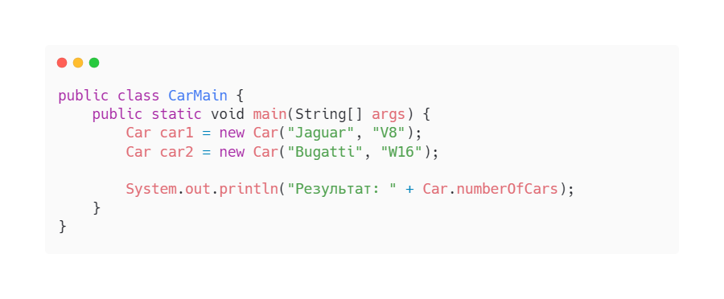
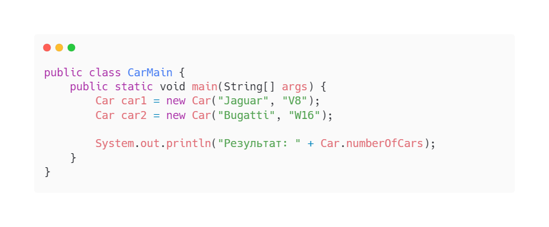

Ключевое слово static в Java
1. Анатомия ключевого слова static.
В языке программирования Java ключевым словом static помечают члены (поля или методы), которые принадлежат
классу, а не экземпляру этого класса.
Это означает, что какое бы количество объектов вы не создали, всегда будет создан только один член,
доступный для использования всеми
экземплярами класса. Ключевое слово static применимо к переменным, методам, блокам инициализации, импорту и
вложенным классам (nested classes).
2. Статические поля (переменные класса).
В языке Java, если поле объявляется статическим (путем добавления модификатора static), то в независимости
от количества созданных объектов
класса — всегда будет существовать только один экземпляр статического поля. Значение такого поля будет
единым и общим для всех объектов класса,
содержащих это поле.
С точки зрения используемой памяти, статические переменные размещаются в специальном пуле в памяти JVM,
называемом Metaspace (до Java 8 он
назывался Permanent Generation или PermGen, который был полностью удален и заменен на Metaspace).
3. Пример статического поля.
Предположим, у нас есть класс Car с несколькими атрибутами (полями). Каждый экземпляр данного класса будет
иметь свою, отличающуюся от других
копию этих переменных экземпляра. Значения таких полей можно менять в объектах независимо друг от друга. А
теперь предположим, что нам требуется
переменная-счетчик для хранения количества созданных объектов Car, которая являлась бы общей для всех его
экземпляров. При этом необходимо, чтобы
каждый из них имел к ней доступ и мог изменять. Тут-то нам и пригодится статическая переменная (в этом и
последующих примерах все поля будут
размещаться в порядке их инициализации при создании объекта):
 Теперь для каждого объекта этого класса будет увеличиваться один и тот же экземпляр переменной numberOfCars.
Давайте это проверим:
Теперь для каждого объекта этого класса будет увеличиваться один и тот же экземпляр переменной numberOfCars.
Давайте это проверим:
 
Результат: 2

Результат: 2
4. Причины использовать статические поля:
• Когда значение поля должно быть общим для всех объектов класса, в котором оно определено.
• Когда значение поля не зависит от наличия объектов класса, в котором оно определено.
• Когда значение поля может быть изменено из любого объекта класса, в котором оно определено.
5. Статические методы (методы классов).
Подобно статическим полям, статические методы также принадлежат классу, а не объекту, поэтому их можно
вызывать без создания экземпляра класса, в
котором они находятся. При этом следует помнить, что из статического метода можно получить доступ только к
статическим переменным или к другим
статическим методам.
 В противном случае при компиляции будет выведена ошибка.
В противном случае при компиляции будет выведена ошибка.
3.3 Причины использовать статические методы.
• Для доступа / управления статическими переменными и другими статическими методами, которые не зависят от
объектов.
• Для служебных, вспомогательных классов и интерфейсов, поскольку не требуют создания объектов и
соответственно, обеспечивают большую
производительность, когда методу требуется доступ лишь к статическим полям класса.